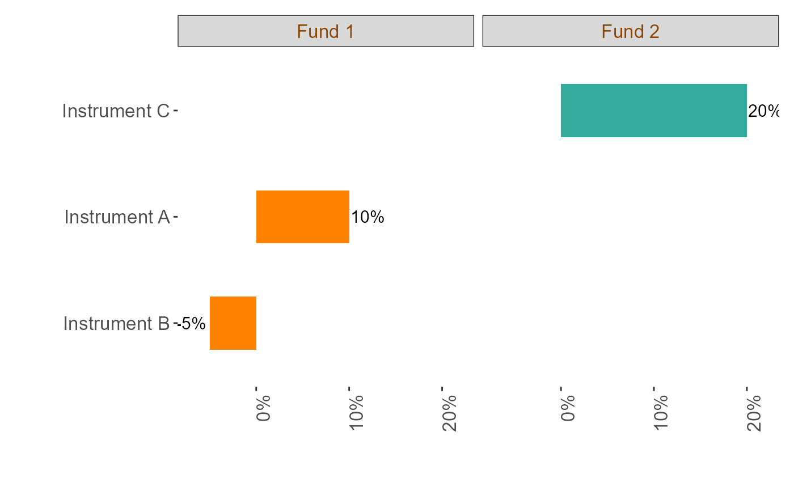

RelativeWeightBarChart
RelativeWeightBarChart.RdThis function generates a flipped bar graph comprising three vertically aligned bar charts. It is particularly useful for comparing two funds, with the third chart showing the relative difference between the two. The bars are colored to represent the funds, and values are annotated on the bars for easier interpretation.
Usage
RelativeWeightBarChart(
df,
instrument_col,
weight_col,
fund_label_col,
txt_abv_grph = 0.05,
instr_txt_size = 12.5,
axis_txt_size = 12.5,
num_size = 4,
percent_y_axis = TRUE
)Arguments
- df
A data frame containing the data to be visualized.
- instrument_col
(string) specifying the column name for the instrument names (used on the x-axis).
- weight_col
(string) specifying the column name for the weights (used on the y-axis).
- fund_label_col
(string) specifying the column name for fund labels (used for grouping and facetting).
- txt_abv_grph
(numeric) controlling the distance from the bar graph to the annotated value (default:
0.05).- instr_txt_size
(numeric) controlling the font size of the instrument text (default:
12.5).- axis_txt_size
(numeric) controlling the font size of axis text (default:
12.5).- num_size
(numeric) controlling the size of the numbers displayed next to the bars (default:
4).- percent
(logical) indicating whether the y-axis should display percentages (
TRUE) or raw numbers (FALSE) (default:TRUE).
Examples
# Example data
test_df <- data.frame(
instrument = c("Instrument A", "Instrument B", "Instrument C"),
weight = c(0.1, -0.05, 0.2),
fund_label = c("Fund 1", "Fund 1", "Fund 2")
)
RelativeWeightBarChart(test_df, "instrument", "weight", "fund_label", txt_abv_grph = 0.02)
